Tier IX Tanks
The Best Performing Tanks
Highest Relative WR
The graph shows the tanks with the highest Relative WR. That is the average of players' WR in a tank compared to their average WR at the tier (in all same tier tanks). Relative WR is a measure of the performance/strength of the tank.
- All the statistics are about battles fought during the update 7.6 only.
- The impact of “Stock-grind battles” is reduced based on tier-specific requirement for total battles at the end of the update. Only players with more than 0-152 (depending on the tier) battles in a tank in the end of the update are included to eliminate the impact of the first battles in the tank (with sub-100% crew / modules).
- The players need to have 10-20 battles in a tank and 20-40 battles at the tier during the update.
- Average WR is the players’s average WR in the tank
- Player WR at Tier is the average WR of the players of the tank at the tier. Since different tiers have different difficulty, it is more meaningful to compare players' performance in the same tier tanks.
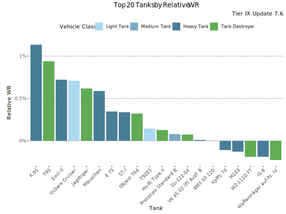
Highest Relative WR - Table
| Tank | Relative WR | Average WR | Player WR at Tier | Players | Battles/Player | Vehicle Class | Tank type |
|---|---|---|---|---|---|---|---|
| K-91 | 1.14% | 56% | 54.8% | 6 963 | 71 | Heavy Tank | Premium |
| T95 | 0.94% | 52.8% | 51.9% | 1 021 | 115 | Tank Destroyer | Researchable |
| Emil II | 0.72% | 52.1% | 51.4% | 5 303 | 97 | Heavy Tank | Researchable |
| Vickers Cruiser | 0.71% | 56.7% | 56% | 3 609 | 93 | Light Tank | Researchable |
| Jagdtiger | 0.62% | 51.3% | 50.7% | 3 833 | 98 | Tank Destroyer | Researchable |
| Mäuschen | 0.59% | 50.2% | 49.6% | 1 233 | 93 | Heavy Tank | Researchable |
| E 75 | 0.35% | 50.1% | 49.7% | 7 017 | 104 | Heavy Tank | Researchable |
| ST-I | 0.34% | 49.4% | 49% | 2 362 | 108 | Heavy Tank | Researchable |
| Object 704 | 0.32% | 50.3% | 49.9% | 4 882 | 111 | Tank Destroyer | Researchable |
| T92E1 | 0.14% | 53.9% | 53.7% | 8 721 | 106 | Light Tank | Researchable |
| Ho-Ri Type II | 0.13% | 51% | 50.8% | 1 359 | 98 | Tank Destroyer | Researchable |
| Prototipo Standard B | 0.08% | 51.7% | 51.6% | 6 626 | 94 | Medium Tank | Researchable |
| SU-122-54 | 0.07% | 51.6% | 51.5% | 1 733 | 121 | Tank Destroyer | Researchable |
| VK 45.02 (P) Ausf. B | 0.01% | 49.7% | 49.7% | 1 199 | 106 | Heavy Tank | Researchable |
| AMX 50 120 | 0% | 49.8% | 49.8% | 2 920 | 93 | Heavy Tank | Researchable |
| KpfPz 70 | -0.11% | 53.9% | 54.1% | 4 185 | 72 | Heavy Tank | Premium |
| M103 | -0.13% | 48.9% | 49% | 2 712 | 95 | Heavy Tank | Researchable |
| WZ-111G FT | -0.19% | 50.8% | 51% | 1 044 | 86 | Tank Destroyer | Researchable |
| IS-8 | -0.19% | 47.9% | 48.1% | 4 894 | 122 | Heavy Tank | Researchable |
| Waffenträger auf Pz. IV | -0.23% | 52.7% | 53% | 20 986 | 125 | Tank Destroyer | Researchable |
Relative WR by player skill-level
The graphs show the best performing tanks by Relative WR by player skill-levels. Players' average WR at the tier is used as a measure for players' skill.
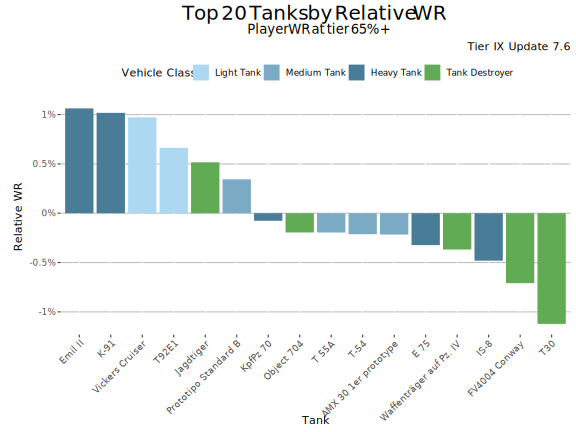
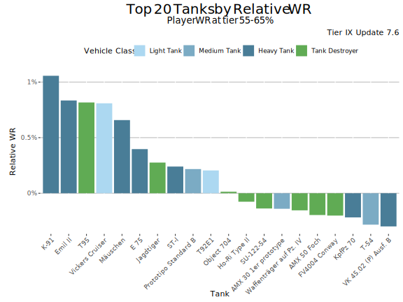
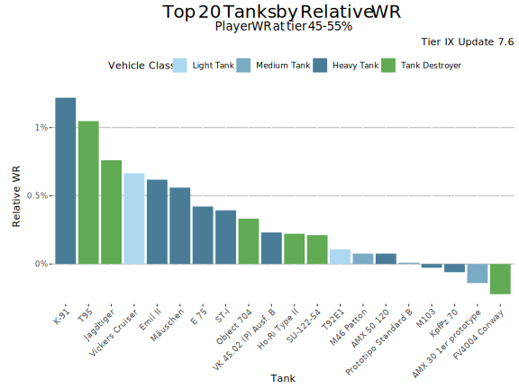
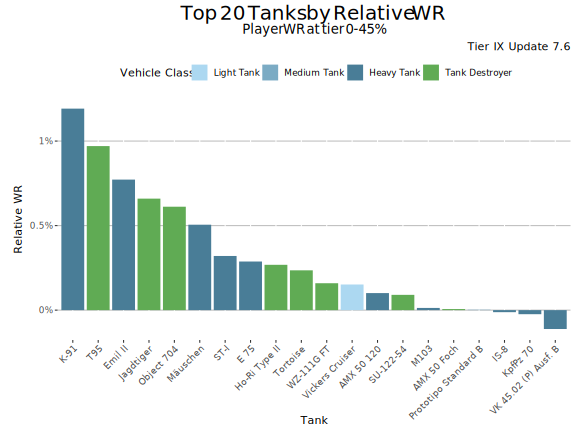
Highest Average WR
This graph shows the tanks with the highest average WR at tier IX during update 7.6. Player WR denotes the tank’s players' average WR across all the tanks during the update. Only tanks with more than 100 players are listed. This may filter out few upcoming tanks that are being tested.
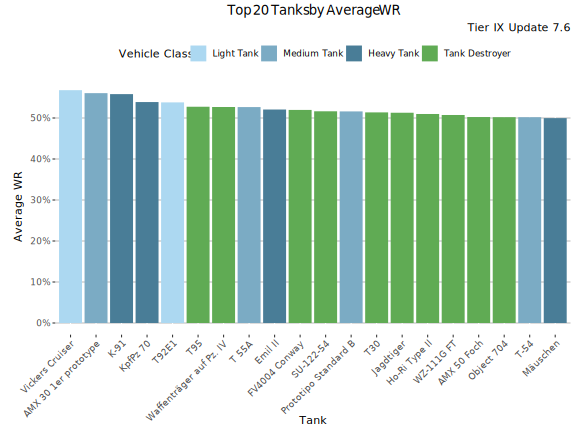
Highest Average WR - Table
Average WR denotes average WR in a tank across all the players during the update. Player WR denotes the tank’s players' average WR across all the tanks during the update.
| Tank | Average WR | Player WR at Tier | Players | Battles/Player | Vehicle Class | Tank type |
|---|---|---|---|---|---|---|
| Vickers Cruiser | 56.8% | 56% | 3 774 | 93 | Light Tank | Researchable |
| AMX 30 1er prototype | 56.1% | 56.2% | 2 416 | 64 | Medium Tank | Premium |
| K-91 | 55.8% | 54.8% | 8 134 | 68 | Heavy Tank | Premium |
| KpfPz 70 | 53.9% | 54% | 4 654 | 71 | Heavy Tank | Premium |
| T92E1 | 53.8% | 53.7% | 9 192 | 104 | Light Tank | Researchable |
| T95 | 52.7% | 51.8% | 1 113 | 115 | Tank Destroyer | Researchable |
| Waffenträger auf Pz. IV | 52.7% | 52.9% | 22 420 | 125 | Tank Destroyer | Researchable |
| T 55A | 52.7% | 53.1% | 1 348 | 61 | Medium Tank | Premium |
| Emil II | 52.1% | 51.4% | 5 566 | 97 | Heavy Tank | Researchable |
| FV4004 Conway | 52% | 52.2% | 2 497 | 95 | Tank Destroyer | Researchable |
| SU-122-54 | 51.6% | 51.5% | 1 823 | 119 | Tank Destroyer | Researchable |
| Prototipo Standard B | 51.6% | 51.6% | 6 995 | 93 | Medium Tank | Researchable |
| T30 | 51.4% | 51.7% | 4 080 | 104 | Tank Destroyer | Researchable |
| Jagdtiger | 51.3% | 50.7% | 4 170 | 97 | Tank Destroyer | Researchable |
| Ho-Ri Type II | 51% | 50.8% | 1 431 | 98 | Tank Destroyer | Researchable |
| WZ-111G FT | 50.7% | 51% | 1 107 | 86 | Tank Destroyer | Researchable |
| AMX 50 Foch | 50.2% | 50.6% | 906 | 94 | Tank Destroyer | Researchable |
| Object 704 | 50.2% | 49.9% | 5 357 | 110 | Tank Destroyer | Researchable |
| T-54 | 50.2% | 50.4% | 9 600 | 122 | Medium Tank | Researchable |
| Mäuschen | 50% | 49.4% | 1 451 | 94 | Heavy Tank | Researchable |
Highest Average Damage
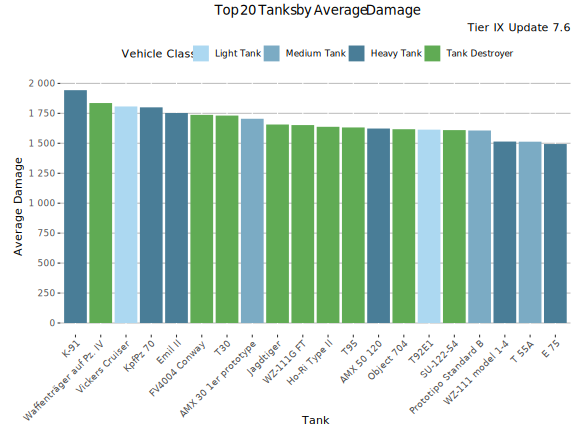
Highest Average Damage - Table
| Tank | Average Damage | Average WR | Player WR at Tier | Players | Battles/Player | Vehicle Class | Tank type |
|---|---|---|---|---|---|---|---|
| K-91 | 1 943 | 55.8% | 54.8% | 8 134 | 68 | Heavy Tank | Premium |
| Waffenträger auf Pz. IV | 1 836 | 52.7% | 52.9% | 22 420 | 125 | Tank Destroyer | Researchable |
| Vickers Cruiser | 1 807 | 56.8% | 56% | 3 774 | 93 | Light Tank | Researchable |
| KpfPz 70 | 1 800 | 53.9% | 54% | 4 654 | 71 | Heavy Tank | Premium |
| Emil II | 1 753 | 52.1% | 51.4% | 5 566 | 97 | Heavy Tank | Researchable |
| FV4004 Conway | 1 737 | 52% | 52.2% | 2 497 | 95 | Tank Destroyer | Researchable |
| T30 | 1 731 | 51.4% | 51.7% | 4 080 | 104 | Tank Destroyer | Researchable |
| AMX 30 1er prototype | 1 705 | 56.1% | 56.2% | 2 416 | 64 | Medium Tank | Premium |
| Jagdtiger | 1 657 | 51.3% | 50.7% | 4 170 | 97 | Tank Destroyer | Researchable |
| WZ-111G FT | 1 652 | 50.7% | 51% | 1 107 | 86 | Tank Destroyer | Researchable |
| Ho-Ri Type II | 1 638 | 51% | 50.8% | 1 431 | 98 | Tank Destroyer | Researchable |
| T95 | 1 632 | 52.7% | 51.8% | 1 113 | 115 | Tank Destroyer | Researchable |
| AMX 50 120 | 1 623 | 49.7% | 49.7% | 3 119 | 93 | Heavy Tank | Researchable |
| Object 704 | 1 617 | 50.2% | 49.9% | 5 357 | 110 | Tank Destroyer | Researchable |
| T92E1 | 1 614 | 53.8% | 53.7% | 9 192 | 104 | Light Tank | Researchable |
| SU-122-54 | 1 610 | 51.6% | 51.5% | 1 823 | 119 | Tank Destroyer | Researchable |
| Prototipo Standard B | 1 607 | 51.6% | 51.6% | 6 995 | 93 | Medium Tank | Researchable |
| WZ-111 model 1-4 | 1 514 | 49.5% | 50.1% | 794 | 92 | Heavy Tank | Researchable |
| T 55A | 1 513 | 52.7% | 53.1% | 1 348 | 61 | Medium Tank | Premium |
| E 75 | 1 494 | 49.9% | 49.6% | 7 957 | 104 | Heavy Tank | Researchable |
Highest Average Kills/Battle
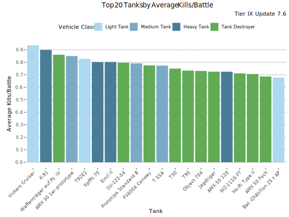
Highest Average Kills/Battle - Table
| Tank | Average Kills/Battle | Average WR | Player WR at Tier | Players | Battles/Player | Vehicle Class | Tank type |
|---|---|---|---|---|---|---|---|
| Vickers Cruiser | 0.94 | 56.8% | 56% | 3 774 | 93 | Light Tank | Researchable |
| K-91 | 0.90 | 55.8% | 54.8% | 8 134 | 68 | Heavy Tank | Premium |
| Waffenträger auf Pz. IV | 0.86 | 52.7% | 52.9% | 22 420 | 125 | Tank Destroyer | Researchable |
| AMX 30 1er prototype | 0.85 | 56.1% | 56.2% | 2 416 | 64 | Medium Tank | Premium |
| T92E1 | 0.83 | 53.8% | 53.7% | 9 192 | 104 | Light Tank | Researchable |
| KpfPz 70 | 0.80 | 53.9% | 54% | 4 654 | 71 | Heavy Tank | Premium |
| Emil II | 0.80 | 52.1% | 51.4% | 5 566 | 97 | Heavy Tank | Researchable |
| SU-122-54 | 0.80 | 51.6% | 51.5% | 1 823 | 119 | Tank Destroyer | Researchable |
| Prototipo Standard B | 0.79 | 51.6% | 51.6% | 6 995 | 93 | Medium Tank | Researchable |
| FV4004 Conway | 0.78 | 52% | 52.2% | 2 497 | 95 | Tank Destroyer | Researchable |
| T 55A | 0.77 | 52.7% | 53.1% | 1 348 | 61 | Medium Tank | Premium |
| T30 | 0.75 | 51.4% | 51.7% | 4 080 | 104 | Tank Destroyer | Researchable |
| T95 | 0.73 | 52.7% | 51.8% | 1 113 | 115 | Tank Destroyer | Researchable |
| Object 704 | 0.73 | 50.2% | 49.9% | 5 357 | 110 | Tank Destroyer | Researchable |
| Jagdtiger | 0.72 | 51.3% | 50.7% | 4 170 | 97 | Tank Destroyer | Researchable |
| AMX 50 120 | 0.72 | 49.7% | 49.7% | 3 119 | 93 | Heavy Tank | Researchable |
| WZ-111G FT | 0.71 | 50.7% | 51% | 1 107 | 86 | Tank Destroyer | Researchable |
| Ho-Ri Type II | 0.71 | 51% | 50.8% | 1 431 | 98 | Tank Destroyer | Researchable |
| AMX 50 Foch | 0.69 | 50.2% | 50.6% | 906 | 94 | Tank Destroyer | Researchable |
| Bat.-Châtillon 25 t AP | 0.68 | 49% | 50.2% | 1 827 | 93 | Light Tank | Researchable |
Highest Spot Rate
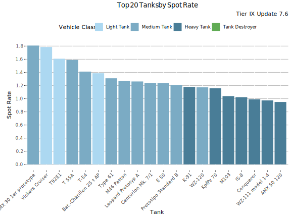
Highest Spot Rate - Table
| Tank | Spot Rate | Average WR | Player WR at Tier | Players | Battles/Player | Vehicle Class | Tank type |
|---|---|---|---|---|---|---|---|
| AMX 30 1er prototype | 1.81 | 56.1% | 56.2% | 2 416 | 64 | Medium Tank | Premium |
| Vickers Cruiser | 1.79 | 56.8% | 56% | 3 774 | 93 | Light Tank | Researchable |
| T92E1 | 1.61 | 53.8% | 53.7% | 9 192 | 104 | Light Tank | Researchable |
| T 55A | 1.59 | 52.7% | 53.1% | 1 348 | 61 | Medium Tank | Premium |
| T-54 | 1.41 | 50.2% | 50.4% | 9 600 | 122 | Medium Tank | Researchable |
| Bat.-Châtillon 25 t AP | 1.39 | 49% | 50.2% | 1 827 | 93 | Light Tank | Researchable |
| Type 61 | 1.31 | 48.2% | 49.3% | 1 235 | 103 | Medium Tank | Researchable |
| M46 Patton | 1.27 | 48.8% | 48.9% | 978 | 106 | Medium Tank | Researchable |
| Leopard Prototyp A | 1.26 | 46.9% | 47.9% | 3 056 | 106 | Medium Tank | Researchable |
| Centurion Mk. 7/1 | 1.24 | 49.5% | 50.3% | 1 492 | 100 | Medium Tank | Researchable |
| E 50 | 1.24 | 48.5% | 49.1% | 2 335 | 97 | Medium Tank | Researchable |
| Prototipo Standard B | 1.21 | 51.6% | 51.6% | 6 995 | 93 | Medium Tank | Researchable |
| K-91 | 1.18 | 55.8% | 54.8% | 8 134 | 68 | Heavy Tank | Premium |
| WZ-120 | 1.17 | 49.3% | 49.9% | 1 563 | 95 | Medium Tank | Researchable |
| KpfPz 70 | 1.16 | 53.9% | 54% | 4 654 | 71 | Heavy Tank | Premium |
| M103 | 1.04 | 48.8% | 48.9% | 2 993 | 95 | Heavy Tank | Researchable |
| IS-8 | 1.02 | 47.7% | 48% | 5 507 | 122 | Heavy Tank | Researchable |
| Conqueror | 0.99 | 47.5% | 48.4% | 1 580 | 92 | Heavy Tank | Researchable |
| WZ-111 model 1-4 | 0.97 | 49.5% | 50.1% | 794 | 92 | Heavy Tank | Researchable |
| AMX 50 120 | 0.95 | 49.7% | 49.7% | 3 119 | 93 | Heavy Tank | Researchable |
Highest Hit Rate
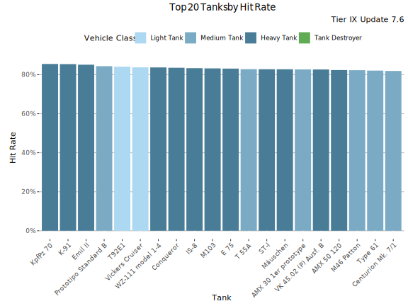
Highest Hit Rate - Table
| Tank | Hit Rate | Average WR | Player WR at Tier | Players | Battles/Player | Vehicle Class | Tank type |
|---|---|---|---|---|---|---|---|
| KpfPz 70 | 85.5% | 53.9% | 54% | 4 654 | 71 | Heavy Tank | Premium |
| K-91 | 85.4% | 55.8% | 54.8% | 8 134 | 68 | Heavy Tank | Premium |
| Emil II | 85.1% | 52.1% | 51.4% | 5 566 | 97 | Heavy Tank | Researchable |
| Prototipo Standard B | 84.4% | 51.6% | 51.6% | 6 995 | 93 | Medium Tank | Researchable |
| T92E1 | 84.1% | 53.8% | 53.7% | 9 192 | 104 | Light Tank | Researchable |
| Vickers Cruiser | 83.8% | 56.8% | 56% | 3 774 | 93 | Light Tank | Researchable |
| WZ-111 model 1-4 | 83.7% | 49.5% | 50.1% | 794 | 92 | Heavy Tank | Researchable |
| Conqueror | 83.6% | 47.5% | 48.4% | 1 580 | 92 | Heavy Tank | Researchable |
| IS-8 | 83.4% | 47.7% | 48% | 5 507 | 122 | Heavy Tank | Researchable |
| M103 | 83.2% | 48.8% | 48.9% | 2 993 | 95 | Heavy Tank | Researchable |
| E 75 | 83.1% | 49.9% | 49.6% | 7 957 | 104 | Heavy Tank | Researchable |
| T 55A | 82.8% | 52.7% | 53.1% | 1 348 | 61 | Medium Tank | Premium |
| ST-I | 82.8% | 49.2% | 48.9% | 2 645 | 107 | Heavy Tank | Researchable |
| Mäuschen | 82.8% | 50% | 49.4% | 1 451 | 94 | Heavy Tank | Researchable |
| AMX 30 1er prototype | 82.7% | 56.1% | 56.2% | 2 416 | 64 | Medium Tank | Premium |
| VK 45.02 (P) Ausf. B | 82.7% | 49.8% | 49.7% | 1 321 | 105 | Heavy Tank | Researchable |
| AMX 50 120 | 82.4% | 49.7% | 49.7% | 3 119 | 93 | Heavy Tank | Researchable |
| M46 Patton | 82.3% | 48.8% | 48.9% | 978 | 106 | Medium Tank | Researchable |
| Type 61 | 82.1% | 48.2% | 49.3% | 1 235 | 103 | Medium Tank | Researchable |
| Centurion Mk. 7/1 | 81.9% | 49.5% | 50.3% | 1 492 | 100 | Medium Tank | Researchable |
Most Popular Tanks

Most played Tanks
This graph shows the most played tanks by number of battles during the update 7.6.
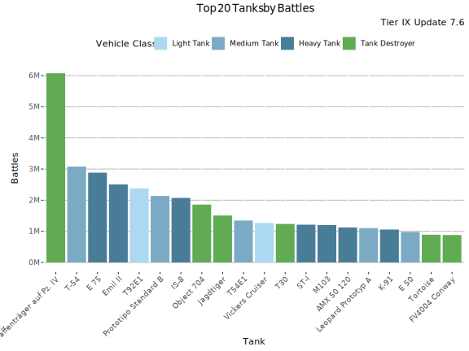
Most Played Tanks - Table
| Tank | Battles | Average WR | Player WR at Tier | Players | Battles/Player | Vehicle Class | Tank type |
|---|---|---|---|---|---|---|---|
| Waffenträger auf Pz. IV | 6.10M | 52.3% | 53.3% | 70 140 | 53 | Tank Destroyer | Researchable |
| T-54 | 3.10M | 51.5% | 51.7% | 62 057 | 33 | Medium Tank | Researchable |
| E 75 | 2.90M | 51.2% | 51.2% | 68 879 | 28 | Heavy Tank | Researchable |
| Emil II | 2.50M | 53.5% | 51.8% | 52 487 | 31 | Heavy Tank | Researchable |
| T92E1 | 2.40M | 53.4% | 53.8% | 49 273 | 31 | Light Tank | Researchable |
| Prototipo Standard B | 2.10M | 52.3% | 52.4% | 47 187 | 29 | Medium Tank | Researchable |
| IS-8 | 2.10M | 49.1% | 49.8% | 45 320 | 31 | Heavy Tank | Researchable |
| Object 704 | 1.90M | 51.9% | 51.2% | 41 602 | 29 | Tank Destroyer | Researchable |
| Jagdtiger | 1.50M | 52.9% | 51.9% | 36 797 | 27 | Tank Destroyer | Researchable |
| T54E1 | 1.30M | 49.8% | 51.2% | 37 886 | 24 | Medium Tank | Researchable |
| Vickers Cruiser | 1.30M | 57% | 55.9% | 29 268 | 28 | Light Tank | Researchable |
| T30 | 1.20M | 53.2% | 53.7% | 29 938 | 27 | Tank Destroyer | Researchable |
| ST-I | 1.20M | 51.7% | 51.2% | 32 887 | 25 | Heavy Tank | Researchable |
| M103 | 1.20M | 51.2% | 50.8% | 29 489 | 27 | Heavy Tank | Researchable |
| AMX 50 120 | 1.10M | 51.1% | 51.4% | 30 059 | 25 | Heavy Tank | Researchable |
| Leopard Prototyp A | 1.10M | 48.2% | 50.2% | 28 940 | 26 | Medium Tank | Researchable |
| K-91 | 1.10M | 57% | 54.9% | 34 028 | 22 | Heavy Tank | Premium |
| E 50 | 0.98M | 50.3% | 51.4% | 28 788 | 23 | Medium Tank | Researchable |
| Tortoise | 0.89M | 49.4% | 50.3% | 20 261 | 31 | Tank Destroyer | Researchable |
| FV4004 Conway | 0.88M | 53.5% | 53.7% | 20 869 | 28 | Tank Destroyer | Researchable |
Lowest Performing Tanks
Lowest Relative WR
The graph shows the tanks with the lowest Relative WR. That is the average of players' WR in a tank compared to their average WR at the tier (in all same tier tanks). Relative WR is a measure of the performance/strength of the tank.
- All the statistics are about battles fought during the update 7.6 only.
- The impact of “Stock-grind battles” is reduced based on tier-specific requirement for total battles at the end of the update. Only players with more than 0-152 (depending on the tier) battles in a tank in the end of the update are included to eliminate the impact of the first battles in the tank (with sub-100% crew / modules).
- The players need to have 10-20 battles in a tank and 20-40 battles at the tier during the update.
- Average WR is the players' average WR in the tank
- Player WR at Tier is the average WR of the players of the tank at the tier. Since different tiers have different difficulty, it is more meaningful to compare players' performance in the same tier tanks.
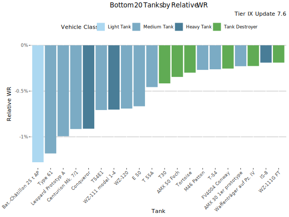
Lowest Relative WR - Table
| Tank | Relative WR | Average WR | Player WR at Tier | Players | Battles/Player | Vehicle Class | Tank type |
|---|---|---|---|---|---|---|---|
| Bat.-Châtillon 25 t AP | -1.28% | 49% | 50.3% | 1 715 | 93 | Light Tank | Researchable |
| Type 61 | -1.18% | 48.2% | 49.4% | 1 138 | 103 | Medium Tank | Researchable |
| Leopard Prototyp A | -0.99% | 47% | 48% | 2 750 | 104 | Medium Tank | Researchable |
| Centurion Mk. 7/1 | -0.91% | 49.5% | 50.4% | 1 373 | 100 | Medium Tank | Researchable |
| Conqueror | -0.91% | 47.6% | 48.5% | 1 461 | 92 | Heavy Tank | Researchable |
| T54E1 | -0.71% | 48.1% | 48.8% | 3 034 | 92 | Medium Tank | Researchable |
| WZ-111 model 1-4 | -0.7% | 49.5% | 50.2% | 745 | 93 | Heavy Tank | Researchable |
| WZ-120 | -0.69% | 49.2% | 49.9% | 1 463 | 95 | Medium Tank | Researchable |
| E 50 | -0.67% | 48.5% | 49.1% | 2 151 | 98 | Medium Tank | Researchable |
| T 55A | -0.46% | 52.7% | 53.1% | 1 221 | 62 | Medium Tank | Premium |
| T30 | -0.42% | 51.4% | 51.8% | 3 814 | 104 | Tank Destroyer | Researchable |
| AMX 50 Foch | -0.35% | 50.3% | 50.7% | 856 | 94 | Tank Destroyer | Researchable |
| Tortoise | -0.3% | 47.7% | 48% | 1 631 | 125 | Tank Destroyer | Researchable |
| M46 Patton | -0.27% | 48.8% | 49.1% | 885 | 105 | Medium Tank | Researchable |
| T-54 | -0.26% | 50.2% | 50.4% | 8 614 | 123 | Medium Tank | Researchable |
| FV4004 Conway | -0.25% | 52% | 52.3% | 2 372 | 95 | Tank Destroyer | Researchable |
| AMX 30 1er prototype | -0.23% | 56% | 56.2% | 2 224 | 65 | Medium Tank | Premium |
| Waffenträger auf Pz. IV | -0.23% | 52.7% | 53% | 20 986 | 125 | Tank Destroyer | Researchable |
| IS-8 | -0.19% | 47.9% | 48.1% | 4 894 | 122 | Heavy Tank | Researchable |
| WZ-111G FT | -0.19% | 50.8% | 51% | 1 044 | 86 | Tank Destroyer | Researchable |
Lowest Relative WR by player skill-level
The graphs show the worst performing tanks by Relative WR by player skill-levels. Players' average WR at the tier is used as a measure for players' skill.
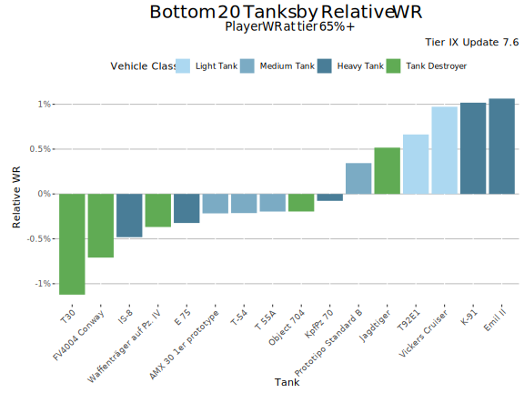
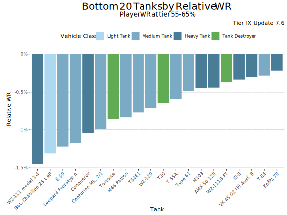
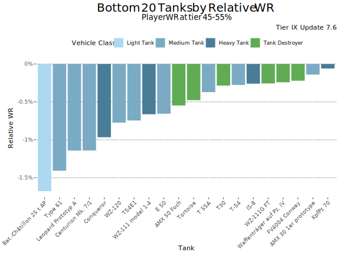
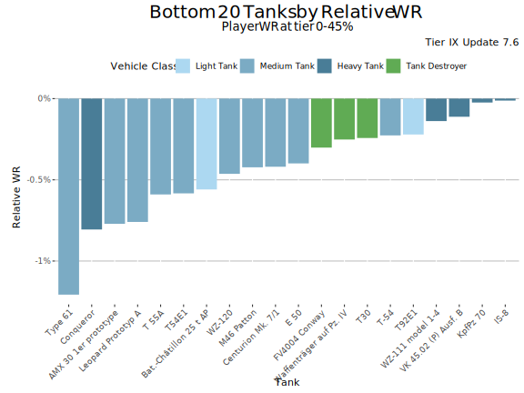
Lowest Average WR
This graph shows the tanks with the lowest average WR at tier IX during update 7.6. Player WR denotes the tank’s players' average WR across all the tanks during the update. Only tanks with more than 100 players are listed. This may filter out few upcoming tanks that are being tested.

Lowest Average WR - Table
Average WR denotes average WR in a tank across all the players during the update. Player WR denotes the tank’s players' average WR across all the tanks during the update.
| Tank | Average WR | Player WR at Tier | Players | Battles/Player | Vehicle Class | Tank type |
|---|---|---|---|---|---|---|
| Leopard Prototyp A | 46.9% | 47.9% | 3 056 | 106 | Medium Tank | Researchable |
| Conqueror | 47.5% | 48.4% | 1 580 | 92 | Heavy Tank | Researchable |
| Tortoise | 47.7% | 47.9% | 1 800 | 124 | Tank Destroyer | Researchable |
| IS-8 | 47.7% | 48% | 5 507 | 122 | Heavy Tank | Researchable |
| T54E1 | 48.1% | 48.7% | 3 275 | 91 | Medium Tank | Researchable |
| Type 61 | 48.2% | 49.3% | 1 235 | 103 | Medium Tank | Researchable |
| E 50 | 48.5% | 49.1% | 2 335 | 97 | Medium Tank | Researchable |
| M103 | 48.8% | 48.9% | 2 993 | 95 | Heavy Tank | Researchable |
| M46 Patton | 48.8% | 48.9% | 978 | 106 | Medium Tank | Researchable |
| Bat.-Châtillon 25 t AP | 49% | 50.2% | 1 827 | 93 | Light Tank | Researchable |
| ST-I | 49.2% | 48.9% | 2 645 | 107 | Heavy Tank | Researchable |
| WZ-120 | 49.3% | 49.9% | 1 563 | 95 | Medium Tank | Researchable |
| Centurion Mk. 7/1 | 49.5% | 50.3% | 1 492 | 100 | Medium Tank | Researchable |
| WZ-111 model 1-4 | 49.5% | 50.1% | 794 | 92 | Heavy Tank | Researchable |
| AMX 50 120 | 49.7% | 49.7% | 3 119 | 93 | Heavy Tank | Researchable |
| VK 45.02 (P) Ausf. B | 49.8% | 49.7% | 1 321 | 105 | Heavy Tank | Researchable |
| E 75 | 49.9% | 49.6% | 7 957 | 104 | Heavy Tank | Researchable |
| Mäuschen | 50% | 49.4% | 1 451 | 94 | Heavy Tank | Researchable |
| T-54 | 50.2% | 50.4% | 9 600 | 122 | Medium Tank | Researchable |
| Object 704 | 50.2% | 49.9% | 5 357 | 110 | Tank Destroyer | Researchable |
Lowest Average Damage
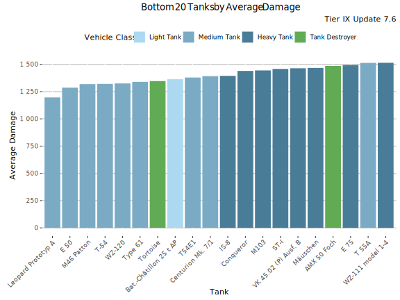
Lowest Average Damage - Table
| Tank | Average Damage | Average WR | Player WR at Tier | Players | Battles/Player | Vehicle Class | Tank type |
|---|---|---|---|---|---|---|---|
| Leopard Prototyp A | 1 196 | 46.9% | 47.9% | 3 056 | 106 | Medium Tank | Researchable |
| E 50 | 1 286 | 48.5% | 49.1% | 2 335 | 97 | Medium Tank | Researchable |
| M46 Patton | 1 319 | 48.8% | 48.9% | 978 | 106 | Medium Tank | Researchable |
| T-54 | 1 321 | 50.2% | 50.4% | 9 600 | 122 | Medium Tank | Researchable |
| WZ-120 | 1 325 | 49.3% | 49.9% | 1 563 | 95 | Medium Tank | Researchable |
| Type 61 | 1 340 | 48.2% | 49.3% | 1 235 | 103 | Medium Tank | Researchable |
| Tortoise | 1 346 | 47.7% | 47.9% | 1 800 | 124 | Tank Destroyer | Researchable |
| Bat.-Châtillon 25 t AP | 1 363 | 49% | 50.2% | 1 827 | 93 | Light Tank | Researchable |
| T54E1 | 1 379 | 48.1% | 48.7% | 3 275 | 91 | Medium Tank | Researchable |
| Centurion Mk. 7/1 | 1 392 | 49.5% | 50.3% | 1 492 | 100 | Medium Tank | Researchable |
| IS-8 | 1 395 | 47.7% | 48% | 5 507 | 122 | Heavy Tank | Researchable |
| Conqueror | 1 440 | 47.5% | 48.4% | 1 580 | 92 | Heavy Tank | Researchable |
| M103 | 1 444 | 48.8% | 48.9% | 2 993 | 95 | Heavy Tank | Researchable |
| ST-I | 1 458 | 49.2% | 48.9% | 2 645 | 107 | Heavy Tank | Researchable |
| VK 45.02 (P) Ausf. B | 1 464 | 49.8% | 49.7% | 1 321 | 105 | Heavy Tank | Researchable |
| Mäuschen | 1 467 | 50% | 49.4% | 1 451 | 94 | Heavy Tank | Researchable |
| AMX 50 Foch | 1 486 | 50.2% | 50.6% | 906 | 94 | Tank Destroyer | Researchable |
| E 75 | 1 494 | 49.9% | 49.6% | 7 957 | 104 | Heavy Tank | Researchable |
| T 55A | 1 513 | 52.7% | 53.1% | 1 348 | 61 | Medium Tank | Premium |
| WZ-111 model 1-4 | 1 514 | 49.5% | 50.1% | 794 | 92 | Heavy Tank | Researchable |
Lowest Average Kills/Battle
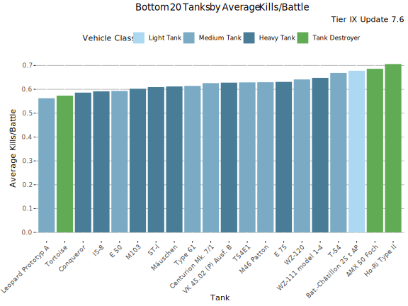
Lowest Average Kills/Battle - Table
| Tank | Average Kills/Battle | Average WR | Player WR at Tier | Players | Battles/Player | Vehicle Class | Tank type |
|---|---|---|---|---|---|---|---|
| Leopard Prototyp A | 0.56 | 46.9% | 47.9% | 3 056 | 106 | Medium Tank | Researchable |
| Tortoise | 0.57 | 47.7% | 47.9% | 1 800 | 124 | Tank Destroyer | Researchable |
| Conqueror | 0.59 | 47.5% | 48.4% | 1 580 | 92 | Heavy Tank | Researchable |
| IS-8 | 0.59 | 47.7% | 48% | 5 507 | 122 | Heavy Tank | Researchable |
| E 50 | 0.59 | 48.5% | 49.1% | 2 335 | 97 | Medium Tank | Researchable |
| M103 | 0.60 | 48.8% | 48.9% | 2 993 | 95 | Heavy Tank | Researchable |
| ST-I | 0.61 | 49.2% | 48.9% | 2 645 | 107 | Heavy Tank | Researchable |
| Mäuschen | 0.61 | 50% | 49.4% | 1 451 | 94 | Heavy Tank | Researchable |
| Type 61 | 0.61 | 48.2% | 49.3% | 1 235 | 103 | Medium Tank | Researchable |
| Centurion Mk. 7/1 | 0.63 | 49.5% | 50.3% | 1 492 | 100 | Medium Tank | Researchable |
| VK 45.02 (P) Ausf. B | 0.63 | 49.8% | 49.7% | 1 321 | 105 | Heavy Tank | Researchable |
| T54E1 | 0.63 | 48.1% | 48.7% | 3 275 | 91 | Medium Tank | Researchable |
| M46 Patton | 0.63 | 48.8% | 48.9% | 978 | 106 | Medium Tank | Researchable |
| E 75 | 0.63 | 49.9% | 49.6% | 7 957 | 104 | Heavy Tank | Researchable |
| WZ-120 | 0.64 | 49.3% | 49.9% | 1 563 | 95 | Medium Tank | Researchable |
| WZ-111 model 1-4 | 0.65 | 49.5% | 50.1% | 794 | 92 | Heavy Tank | Researchable |
| T-54 | 0.67 | 50.2% | 50.4% | 9 600 | 122 | Medium Tank | Researchable |
| Bat.-Châtillon 25 t AP | 0.68 | 49% | 50.2% | 1 827 | 93 | Light Tank | Researchable |
| AMX 50 Foch | 0.69 | 50.2% | 50.6% | 906 | 94 | Tank Destroyer | Researchable |
| Ho-Ri Type II | 0.71 | 51% | 50.8% | 1 431 | 98 | Tank Destroyer | Researchable |
Lowest Spot Rate
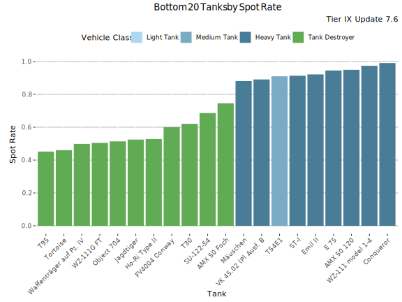
Lowest Spot Rate - Table
| Tank | Spot Rate | Average WR | Player WR at Tier | Players | Battles/Player | Vehicle Class | Tank type |
|---|---|---|---|---|---|---|---|
| T95 | 0.45 | 52.7% | 51.8% | 1 113 | 115 | Tank Destroyer | Researchable |
| Tortoise | 0.46 | 47.7% | 47.9% | 1 800 | 124 | Tank Destroyer | Researchable |
| Waffenträger auf Pz. IV | 0.50 | 52.7% | 52.9% | 22 420 | 125 | Tank Destroyer | Researchable |
| WZ-111G FT | 0.50 | 50.7% | 51% | 1 107 | 86 | Tank Destroyer | Researchable |
| Object 704 | 0.51 | 50.2% | 49.9% | 5 357 | 110 | Tank Destroyer | Researchable |
| Jagdtiger | 0.52 | 51.3% | 50.7% | 4 170 | 97 | Tank Destroyer | Researchable |
| Ho-Ri Type II | 0.53 | 51% | 50.8% | 1 431 | 98 | Tank Destroyer | Researchable |
| FV4004 Conway | 0.60 | 52% | 52.2% | 2 497 | 95 | Tank Destroyer | Researchable |
| T30 | 0.62 | 51.4% | 51.7% | 4 080 | 104 | Tank Destroyer | Researchable |
| SU-122-54 | 0.69 | 51.6% | 51.5% | 1 823 | 119 | Tank Destroyer | Researchable |
| AMX 50 Foch | 0.75 | 50.2% | 50.6% | 906 | 94 | Tank Destroyer | Researchable |
| Mäuschen | 0.88 | 50% | 49.4% | 1 451 | 94 | Heavy Tank | Researchable |
| VK 45.02 (P) Ausf. B | 0.89 | 49.8% | 49.7% | 1 321 | 105 | Heavy Tank | Researchable |
| T54E1 | 0.91 | 48.1% | 48.7% | 3 275 | 91 | Medium Tank | Researchable |
| ST-I | 0.91 | 49.2% | 48.9% | 2 645 | 107 | Heavy Tank | Researchable |
| Emil II | 0.92 | 52.1% | 51.4% | 5 566 | 97 | Heavy Tank | Researchable |
| E 75 | 0.95 | 49.9% | 49.6% | 7 957 | 104 | Heavy Tank | Researchable |
| AMX 50 120 | 0.95 | 49.7% | 49.7% | 3 119 | 93 | Heavy Tank | Researchable |
| WZ-111 model 1-4 | 0.97 | 49.5% | 50.1% | 794 | 92 | Heavy Tank | Researchable |
| Conqueror | 0.99 | 47.5% | 48.4% | 1 580 | 92 | Heavy Tank | Researchable |
Lowest Hit Rate
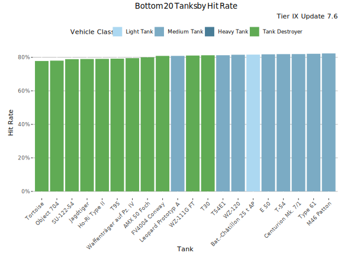
Lowest Hit Rate - Table
| Tank | Hit Rate | Average WR | Player WR at Tier | Players | Battles/Player | Vehicle Class | Tank type |
|---|---|---|---|---|---|---|---|
| Tortoise | 77.8% | 47.7% | 47.9% | 1 800 | 124 | Tank Destroyer | Researchable |
| Object 704 | 78% | 50.2% | 49.9% | 5 357 | 110 | Tank Destroyer | Researchable |
| SU-122-54 | 78.9% | 51.6% | 51.5% | 1 823 | 119 | Tank Destroyer | Researchable |
| Jagdtiger | 79% | 51.3% | 50.7% | 4 170 | 97 | Tank Destroyer | Researchable |
| Ho-Ri Type II | 79.1% | 51% | 50.8% | 1 431 | 98 | Tank Destroyer | Researchable |
| T95 | 79.2% | 52.7% | 51.8% | 1 113 | 115 | Tank Destroyer | Researchable |
| Waffenträger auf Pz. IV | 79.5% | 52.7% | 52.9% | 22 420 | 125 | Tank Destroyer | Researchable |
| AMX 50 Foch | 80% | 50.2% | 50.6% | 906 | 94 | Tank Destroyer | Researchable |
| FV4004 Conway | 80.8% | 52% | 52.2% | 2 497 | 95 | Tank Destroyer | Researchable |
| Leopard Prototyp A | 80.9% | 46.9% | 47.9% | 3 056 | 106 | Medium Tank | Researchable |
| WZ-111G FT | 81.1% | 50.7% | 51% | 1 107 | 86 | Tank Destroyer | Researchable |
| T30 | 81.2% | 51.4% | 51.7% | 4 080 | 104 | Tank Destroyer | Researchable |
| T54E1 | 81.2% | 48.1% | 48.7% | 3 275 | 91 | Medium Tank | Researchable |
| WZ-120 | 81.5% | 49.3% | 49.9% | 1 563 | 95 | Medium Tank | Researchable |
| Bat.-Châtillon 25 t AP | 81.6% | 49% | 50.2% | 1 827 | 93 | Light Tank | Researchable |
| E 50 | 81.8% | 48.5% | 49.1% | 2 335 | 97 | Medium Tank | Researchable |
| T-54 | 81.9% | 50.2% | 50.4% | 9 600 | 122 | Medium Tank | Researchable |
| Centurion Mk. 7/1 | 81.9% | 49.5% | 50.3% | 1 492 | 100 | Medium Tank | Researchable |
| Type 61 | 82.1% | 48.2% | 49.3% | 1 235 | 103 | Medium Tank | Researchable |
| M46 Patton | 82.3% | 48.8% | 48.9% | 978 | 106 | Medium Tank | Researchable |
Least popular Tanks
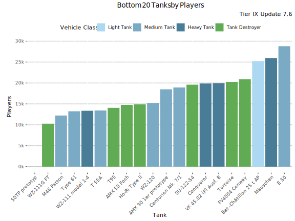
Least played Tanks
This graph shows the most played tanks by number of battles during the update 7.6.
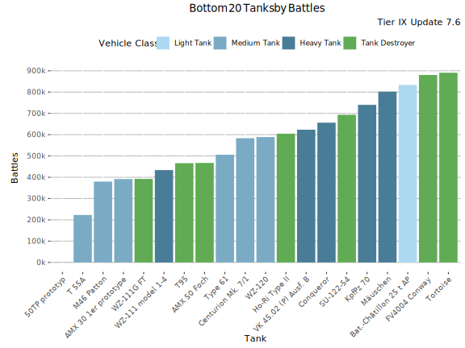
Least Played Tanks - Table
| Tank | Battles | Average WR | Player WR at Tier | Players | Battles/Player | Vehicle Class | Tank type |
|---|---|---|---|---|---|---|---|
| 50TP prototyp | 689 | 73.5% | 74.1% | 12 | 41 | Heavy Tank | Premium |
| T 55A | 222 962 | 55.4% | 54.7% | 13 432 | 11 | Medium Tank | Premium |
| M46 Patton | 379 735 | 52.4% | 52.4% | 12 221 | 22 | Medium Tank | Researchable |
| AMX 30 1er prototype | 391 617 | 56.7% | 56.4% | 18 487 | 14 | Medium Tank | Premium |
| WZ-111G FT | 392 299 | 53.9% | 52.6% | 10 270 | 26 | Tank Destroyer | Researchable |
| WZ-111 model 1-4 | 433 746 | 53.8% | 52.3% | 13 357 | 23 | Heavy Tank | Researchable |
| T95 | 466 217 | 55% | 53.2% | 14 056 | 23 | Tank Destroyer | Researchable |
| AMX 50 Foch | 467 366 | 54.1% | 53% | 14 764 | 22 | Tank Destroyer | Researchable |
| Type 61 | 505 781 | 52% | 52.3% | 13 240 | 27 | Medium Tank | Researchable |
| Centurion Mk. 7/1 | 583 306 | 52.3% | 53% | 18 927 | 21 | Medium Tank | Researchable |
| WZ-120 | 588 868 | 51.5% | 52.2% | 15 233 | 27 | Medium Tank | Researchable |
| Ho-Ri Type II | 604 501 | 53.5% | 51.9% | 14 880 | 28 | Tank Destroyer | Researchable |
| VK 45.02 (P) Ausf. B | 623 313 | 53% | 52.3% | 19 955 | 22 | Heavy Tank | Researchable |
| Conqueror | 656 300 | 50.8% | 51.9% | 19 873 | 23 | Heavy Tank | Researchable |
| SU-122-54 | 693 393 | 54.1% | 53.4% | 19 589 | 24 | Tank Destroyer | Researchable |
| KpfPz 70 | 740 034 | 55.2% | 54.9% | 29 791 | 16 | Heavy Tank | Premium |
| Mäuschen | 802 120 | 51.7% | 50.3% | 25 957 | 22 | Heavy Tank | Researchable |
| Bat.-Châtillon 25 t AP | 833 491 | 50.9% | 52.6% | 25 229 | 23 | Light Tank | Researchable |
| FV4004 Conway | 880 307 | 53.5% | 53.7% | 20 869 | 28 | Tank Destroyer | Researchable |
| Tortoise | 890 770 | 49.4% | 50.3% | 20 261 | 31 | Tank Destroyer | Researchable |
-

This work is licensed under a Creative Commons Attribution-ShareAlike 4.0 International License.
-

-

BlitzAnalysiz[] is a player-created website for World of Tanks: Blitz and developed in accordance with WG DPP. This site is not an official Wargaming or World of Tanks: Blitz website. World of Tanks Blitz and Wargaming are trademarks of Wargaming.net Limited. Game content and materials copyright © Wargaming.net. All rights reserved.